Week 9 — Lecture notes
System analysis with the Laplace transform
Other formats:
📄 PDFLecture outline
Last week:
- Laplace transform converges for unstable poles.
- Unilateral Laplace transform integrates from 0 to \infty, and allows us to take care of initial conditions.
This week:
- Laplace transform & stability
- Inverse Laplace transforms using partial fractions
- System zeros.
Laplace transform & stability
Previously, we have used the Fourier transform of the impulse response as a transfer function. The transfer function lets us compute the output by multiplication with the input:
Time domain
y(t) = \underbrace{h(t)}_{\substack{\text{impulse}\\\text{response}}} * \underbrace{u(t)}_{\text{input}}
Frequency domain
Y(j\omega) = \underbrace{H(j\omega)}_{\substack{\text{transfer}\\\text{function}}}\,\underbrace{U(j\omega)}_{\text{input}}
This only works when the Fourier transform integral converges, but we saw last week for the Laplace transform:
y(t) = h(t) * u(t) \;\rightsquigarrow\; Y(s) = H(s)\,U(s).
So we can reuse our definition of the transfer function:
The transfer function of a system is the Laplace transform of its impulse response.
Our previous definition of a transfer function, the Fourier transform of the impulse response, is usually known as the frequency response.
The Laplace version lets us calculate the transfer function of an unstable system, whose impulse response grows exponentially:
\mathcal{L}\left(e^{pt}\right)(s) = \frac{1}{s - p}, \qquad p > 0.
An unstable impulse response gives a right half plane pole.
We can now complete our stability catalogue:
| Exponentially stable: | poles in the open left half plane |
| Marginally stable: | poles in the closed left half plane, at least one pole on the imaginary axis, no repeated poles on the imaginary axis. |
| Unstable: | at least one pole in the right half plane. |
| BIBO stable: | \displaystyle\int_{-\infty}^{\infty}\lvert h(t)\rvert\,\mathrm{d}t < \infty |
| Exponential stability \Rightarrow BIBO stability. | |
| BIBO stable & no pole/zero cancellations \Rightarrow exponential stability. | |
We can check pole locations by factorising the denominator of the transfer function:
\frac{s - 1}{\underbrace{(s + 1)}_{\text{stable}}\underbrace{(s^2 + s + 1)}_{\text{stable}}\underbrace{(s - 2)}_{\text{unstable}}}
To calculate the corresponding time domain response, however, we need to separate into components in the transform table. This is called Partial Fraction Expansion.
Inverse Laplace transforms using partial fractions
Example 1: simple poles
\frac{1}{s^2 + 3s + 2} = \frac{1}{(s + 1)(s + 2)}.
The residue or cover-up method splits this into two terms:
\frac{A}{s + 1} + \frac{B}{s + 2}.
To find A: cover up the s + 1 part:
\frac{1}{\colorbox{#555555}{\(\color{white}s+1\)}\,(s + 2)}
and plug in the value of the covered pole: s = -1.
This gives A = \dfrac{1}{1} = 1. (This is called a residue in complex analysis).
To find B: repeat with the s + 2 pole:
\frac{1}{(s + 1)\,\colorbox{#555555}{\(\color{white}s+2\)}}
Plug in s = -2 to get B = \dfrac{1}{-1} = -1.
So we have
\frac{1}{s + 1} - \frac{1}{s + 2}.
Let’s check this is correct:
\frac{(s + 2) - (s + 1)}{(s + 1)(s + 2)} = \frac{1}{(s + 1)(s + 2)},
which is what we started with.
We can now calculate the inverse Laplace transform by matching with table entries: in this case,
\frac{1}{s + p} \;\rightsquigarrow\; e^{-pt}.
So the time domain signal corresponding to
\frac{1}{s^2 + 3s + 2} = Y(s)
is
y(t) = e^{-t} - e^{-2t}, \qquad t \ge 0.
Example 2: repeated pole
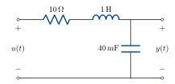
Transfer function is
G(s) = \frac{25}{s^2 + 10s + 25}.
Input is a step, so U(s) = \dfrac{1}{s}.
\begin{aligned} Y(s) &= G(s)\,U(s) \\[6pt] &= \frac{25}{s(s + 5)^2} = \frac{A}{s} + \frac{B}{s + 5} + \frac{C}{(s + 5)^2}. \end{aligned} \qquad(1)
We can find A & C using cover-up:
A = \left.\frac{25}{(s + 5)^2}\right|_{s = 0} = 1
C = \left.\frac{25}{s}\right|_{s = -5} = -5.
For B, from (1) we have
25 = A(s + 5)^2 + Bs(s + 5) + Cs.
The s^2 coefficient is A + B = 0, so B = -1.
So we have
Y(s) = \frac{1}{s} - \frac{1}{s + 5} - \frac{5}{(s + 5)^2}.
Using the transform table,
y(t) = 1 - e^{-5t} - 5te^{-5t}, \qquad t \ge 0.
Example 3: complex pair
Transfer function is
G(s) = \frac{25}{s^2 + 6s + 25}.
Input is a step, so U(s) = \dfrac{1}{s}.
Y(s) = \frac{25}{s\underbrace{(s^2 + 6s + 25)}}.
b^2 - 4ac = 36 - 100 < 0.
Underdamped, so the expansion is
Y(s) = \frac{A}{s} + \frac{Bs + C}{s^2 + 6s + 25}.
Use cover-up to find A:
A = \left.\frac{25}{s^2 + 6s + 25}\right|_{s = 0} = 1.
Coefficient matching:
25 = (s^2 + 6s + 25) + s(Bs + C)
\begin{aligned} s^2 \text{ coefficient:} &\quad 0 = 1 + B. &\quad B &= -1 \\[4pt] s \text{ coefficient:} &\quad 0 = 6 + C. &\quad C &= -6. \end{aligned}
Y(s) = \frac{1}{s} - \frac{(s + 6)}{s^2 + 6s + 25}.
Now complete the square:
\begin{aligned} Y(s) &= \frac{1}{s} - \frac{s + 6}{(s + 3)^2 + 16} \\[8pt] &= \frac{1}{s} - \frac{s + 3}{(s + 3)^2 + 16} - \frac{3}{(s + 3)^2 + 16} \\[8pt] &= \frac{1}{s} - \frac{s + 3}{(s + 3)^2 + 16} - \frac{3}{4}\,\frac{4}{(s + 3)^2 + 16}. \end{aligned}
Now match with the table:
y(t) = \left(1 - e^{-3t}\left(\cos 4t + 0.75\sin 4t\right)\right), \qquad t \ge 0
Example 4
Y(s) = \frac{2s}{(s + 2)(s^2 + 4)} = \frac{A}{s + 2} + \frac{Bs + C}{s^2 + 4}.
Cover-up gives
A = \left.\frac{2s}{(s^2 + 4)}\right|_{s = -2} = \frac{-4}{8} = -\frac{1}{2}.
Coefficient matching:
2s = A(s^2 + 4) + (Bs + C)(s + 2).
\begin{aligned} s^2 \text{ coefficient:} &\quad 0 = A + B. &\quad B &= \tfrac{1}{2}. \\[4pt] s^0 \text{ coefficient:} &\quad 0 = 4A + 2C. &\quad C &= 1. \end{aligned}
Y(s) = \frac{-\tfrac{1}{2}}{s + 2} + \frac{\tfrac{1}{2}s + 1}{s^2 + 4}
y(t) = -\frac{1}{2}e^{-2t} + \frac{1}{2}\cos 2t + \frac{1}{2}\sin 2t, \qquad t \ge 0.
Example 5
Y(s) = \frac{s^2}{s^2 + 6s + 25}
\begin{aligned} Y(s) &= \frac{s^2 + 6s + 25}{s^2 + 6s + 25} - \frac{(6s + 25)}{s^2 + 6s + 25} \\[8pt] &= 1 - \frac{6(s + 3) + 7}{(s + 3)^2 + 16} \\[8pt] &= 1 - 6\,\frac{s + 3}{(s + 3)^2 + 16} - \frac{7}{4}\,\frac{4}{(s + 3)^2 + 16} \end{aligned}
y(t) = \delta(t) - e^{-3t}\left(6\cos 4t + \frac{7}{4}\sin 4t\right), \qquad t \ge 0.
Summary table of decompositions
\begin{aligned} \frac{1}{(s + 1)(s + 2)} &= \frac{A}{s + 1} + \frac{B}{s + 2}. \\[10pt] \frac{25}{s(s + 5)^2} &= \frac{A}{s} + \frac{B}{s + 5} + \frac{C}{(s + 5)^2}. \\[10pt] \frac{25}{s(s^2 + 6s + 25)} &= \frac{A}{s} + \frac{Bs + C}{s^2 + 6s + 25}. \\[10pt] \frac{2s}{(s + 2)(s^2 + 4)} &= \frac{A}{s + 2} + \frac{Bs + C}{s^2 + 4}. \\[10pt] \frac{s^2}{s^2 + 6s + 25} &= 1 + \frac{As + B}{s^2 + 6s + 25}. \end{aligned}
System zeros
So far, we have only looked at the poles of the transfer function (the roots of the denominator). In the time domain, these give decaying or growing exponentials.
What about the roots of the numerator? These are called the zeros of the system.
Intuitively, zeros tell us certain inputs are blocked by the system and don’t appear at the output. Let’s see how this works with a couple of examples. We’ll use mechanical examples as they are a lot easier to visualise in this case, but a good exercise is to find equivalent RLC circuit examples.
Example 6
Damper force is proportional to velocity:
f_d = k_d(\dot{u} - \dot{y}).
Spring force is proportional to y - u:
f_s = k_s(u - y).
Newton’s 2nd law:
\begin{aligned} \ddot{y}m &= f_d + f_s \\[6pt] &= k_d(\dot{u} - \dot{y}) + k_s(u - y). \end{aligned}
Question: can we move the plate so that the damper force and spring force cancel and the mass stays still?
Intuitively: if the spring is one unit away from rest, the spring pulls it back and the damper resists this motion. For the forces to match, the closer the plate, the slower it must move.
Let’s try and find this input using the Laplace transform.
m\ddot{y} + k_d\dot{y} + k_s y = k_d\dot{u} + k_s u
\begin{aligned} m\left(s^2Y(s) - \dot{y}(0) - sy(0)\right) &+ k_d\left(sY(s) - y(0)\right) + k_sY(s) \\[6pt] &= k_d\left(sU(s) - u(0)\right) + k_sU(s). \end{aligned}
Let’s assume \dot{y}(0) = y(0) = 0. Then we have:
Y(s) = \frac{(k_ds + k_s)U(s) - k_du(0)}{ms^2 + k_ds + k_s} \qquad \left(\text{note the zero at } s = \frac{-k_s}{k_d}\right).
So if
U(s) = \frac{k_du(0)}{k_ds + k_s} = \frac{u(0)}{s + \dfrac{k_s}{k_d}}, \qquad Y(s) = 0.
In the time domain, this is
u(t) = u(0)e^{-\frac{k_s}{k_d}t}.
Example 7
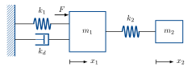
m_1\ddot{x}_1 + k_d\dot{x}_1 + k_1x_1 + k_2(x_1 - x_2) = F \qquad(2)
m_2\ddot{x}_2 + k_2(x_2 - x_1) = 0 \qquad(3)
Suppose x_1(0) = \dot{x}_1(0) = \dot{x}_2(0) = 0. Is there a combination of F \ne 0 and x_2(0) such that x_1(t) = 0 for t \ge 0?
Taking the Laplace transform of (3), we have
m_2\Big(s^2X_2(s) - \underbrace{\cancel{\dot{x}_2(0)}}_{=0} - sx_2(0)\Big) + k_2X_2(s) = k_2X_1(s).
The Laplace transform of (2) with zero initial conditions is
m_1s^2X_1(s) + k_dsX_1(s) + k_1X_1(s) + k_2X_1(s) = F(s) + k_2X_2(s).
If we set X_1(s) = 0 in both equations, we have
m_2\left(s^2X_2(s) - sx_2(0)\right) + k_2X_2(s) = 0
X_2(s) = \frac{sx_2(0)}{s^2 + \dfrac{k_2}{m_2}}
from (3) and
X_2(s) = \frac{-1}{k_2}F(s).
Combining, we have
F(s) = \frac{-sk_2x_2(0)}{s^2 + \dfrac{k_2}{m_2}}.
Taking the inverse transform,
F(t) = -k_2x_2(0)\cos\left(\sqrt{\frac{k_2}{m_2}}\,t\right).
The extra mass completely rejects the sinusoidal input F, and the frequency depends only on m_2, so it can be designed independently of m_1. This idea is used in vibration damping, for example tuned mass dampers for earthquake protection in buildings and Stockbridge dampers on power lines.
Zeros in the frequency domain
In the frequency domain, zeros are the opposite of poles.
Poles give -20 dB/dec gain after the break frequency, and -\frac{\pi}{2} total phase lag.
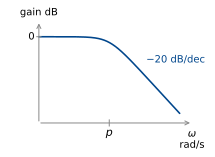
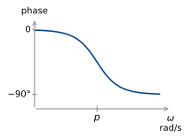
\frac{1}{s + p}
Zeros give +20 dB/dec after the break frequency, and +\frac{\pi}{2} total phase lead.
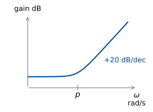
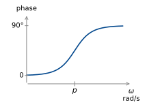
Complex zeros give the opposite behaviour to complex poles.
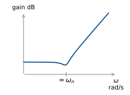
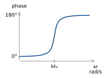
What about poles & zeros on the imaginary axis?
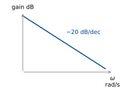
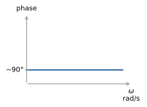
\frac{1}{s} (integrator)
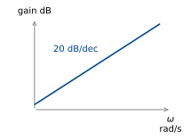
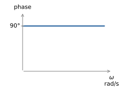
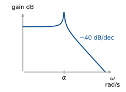
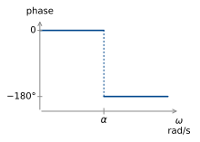
\frac{1}{(j\omega)^2 + \alpha^2}
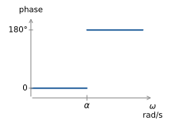
(j\omega)^2 + \alpha^2.
We can use these to estimate the Bode diagrams of arbitrary transfer functions.
Example 8
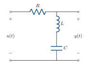
The frequency response of the series RLC with the output taken as the voltage across the capacitor and inductor is given by
G(j\omega) = \frac{(j\omega)^2LC + 1}{(j\omega)^2LC + j\omega RC + 1}
If we have R = 6\,\Omega, L = 1\,\mathrm{H}, C = 40\,\mathrm{mF}, the transfer function is
G(j\omega) = \frac{(j\omega)^2 + 25}{(j\omega)^2 + 6j\omega + 25}
Numerator:
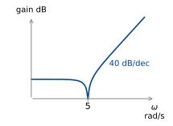
(j\omega)^2 + 5^2.
Denominator:
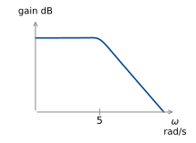
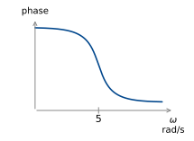
(j\omega)^2 + 6j\omega + 25
\begin{aligned} \omega_n &= 5\ \text{rad/s}, \\[4pt] 2\zeta\omega_n &= 6 \\[4pt] \zeta &= \frac{6}{10} = 0.6. \end{aligned}
Add together:
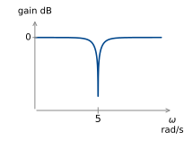
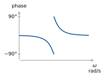
This is a notch filter – it excludes a narrow range of frequencies around 5 rad/s.
More on this next week when we look at filter design!